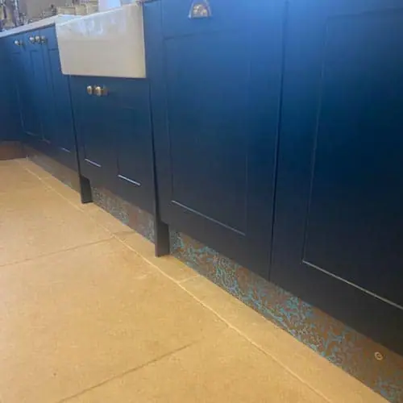
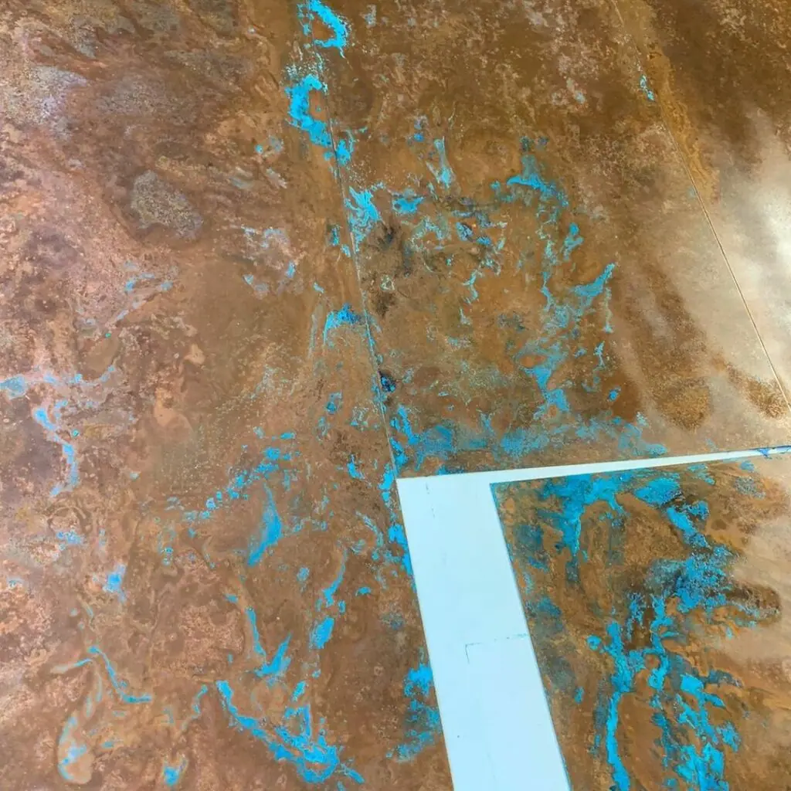

Metal kitchen plinths are the finishing touch to any kitchen project. Whether it’s in the home, commercial kitchen, bistro, open kitchen, restaurant or elsewhere, it’s the perfect statement piece.
All metal kitchen plinths are made by hand to order. You can have your plinth any size or shape, in any finish. Our artisans will create it to your exact specifications.
Contact Halman Thompson to discuss your metal kitchen plinth!

Cut to size
Each of our bespoke finishes can be purchased in sheets cut to your size, perfect for your project.
- Pricing includes delivery
- Each piece can be coated in a gloss finish lacquer that prevents aged finishes from further ageing

Ready to go
We can provide bespoke cut metal, please get in touch to find out more.
Get in touch for a bespoke quote .
Metal kitchen plinth finishes
You can have your metal kitchen plinth in one of the following beautiful finishes:
- Cheshire finish – Deep copper tones that provide a rich finish that changes depending on the light
- Wiltshire finish – Light aged brass finish with a speckled patina ideal for brightening up a space
- Ayrshire finish – Legacy aged copper finish with a darker look and feel that provides genuine interest
- Cambridgeshire finish – Brushed aged brass finish with a modest texture that reflects the light in interesting ways
- Northumberland finish – Radiant mix of copper and verdigris in a fascinating swirl pattern
- Natural brass finish – Natural brass finish that delivers exactly what you expect from this timeless metal
- Natural copper finish – Natural copper finish that’s everything you expect from copper and more
- Hertfordshire finish – Attractive aged copper with intriguing splashes of verdigris throughout
- Somerset finish – Absorbing aged brass finish with a mix of dark and light elements throughout
Handcrafted metal kitchen plinths
All metal kitchen plinths from Halman Thompson are created by hand, to order. Every product we sell is created in-house by our team of expert craftspeople.
We laser cut your kitchen plinth to your exact dimensions, including holes for cables, pipes, lights or anything else you require.
Once cut, we will prepare the metal and apply the aged look as required. We’ll then finish off the plinth with a tough, transparent lacquer to help preserve and protect it.
Natural brass and copper plinths can be left as bare metal or protected by the same lacquer.
Typical turnaround time is 14 days as we make everything to order.
Looking after your metal kitchen plinth
As well as looking amazing, metal kitchen plinths from Halman Thompson are very low maintenance.
Despite being in an exposed part of the kitchen, the tough lacquer we use does an amazing job of protecting the metal.
Simply wipe down occasionally with warm soapy water and a soft cloth to keep your plinth looking amazing forever.
Full care instructions are included with every kitchen plinth.
Contact Halman Thompson for a free metal kitchen plinth quotation or complete the form below!
Choose a finish


If you can dream it, we’ll make it.
Bars, balustrades, staircases, worktops, cladding and pieces that don’t have a name yet. Our designers and craftspeople work in brass, copper, zinc and steel, and alongside wood.